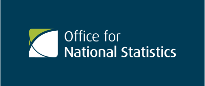
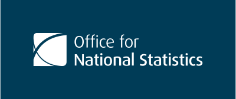

The ONS logo uses two colours, ONS blue and ONS green. Use the primary colour version of the logo on a white background for maximum impact, clarity and consistency.
Primary colours
ONS Blue
PMS 548
C100 M24 Y0 K64
R0 G60 B87
#003C57
ONS Green
PMS 383
C20 M0 Y100 K19
R0 G60 B87
#A8BD3A
In cases where the primary colours are not appropriate, the following versions are available.
Two-colour reverse
Use the two-color reverse logo uses the primary colours. It should only be used on ONS blue coloured backgrounds.
Reverse white
Use the solid white logo on dark-coloured backgrounds. The colour contrast ratio for text and background elements should be at least 4.5:1 as recommended by the W3C.
Single colour black
Use this logo for content that’s primarily black and white or when the primary logo isn’t appropriate.
Landscape logo and symbol
The principles above can also be applied to the landscape logo and symbol.